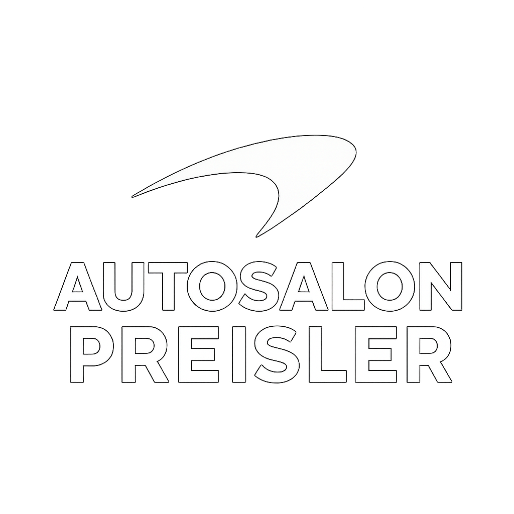

Samostatne som vyvinul webovú aplikáciu zameranú na prezentáciu a správu služieb v oblasti maliarstva. Nástroj slúži na efektívnu digitálnu propagáciu prác a zjednodušenie kontaktu so zákazníkmi.
So spolužiakom Martinom Kovalčíkom som vyvinul webovú aplikáciu Brain Boost, ktorá slúži ako interaktívna vedomostná súťaž. Projekt je zameraný na testovanie vedomostí používateľov a ich vzdelávanie prostredníctvom pútavého digitálneho prostredia.
Tento projekt vznikol ako výsledok tímovej spolupráce medzi mnou a mojimi spolužiakmi zo SPŠIT, Matúšom Bekem a Jakubom Tatarom. Spoločne sme vyvinuli desktopovú aplikáciu , ktorú sme naprogramovali v jazyku Python s využitím knižnice Pygame.

Vytvoril som vlastnú webovú platformu Autosalón, ktorá funguje ako komplexný interaktívny katalóg vozidiel. Aplikácia umožňuje prehľadné spravovanie ponuky áut a optimalizáciu celého predajného procesu.

Vytvoril som vlastnú webovú platformu Autosalón, ktorá funguje ako komplexný interaktívny katalóg vozidiel. Aplikácia umožňuje prehľadné spravovanie ponuky áut a optimalizáciu celého predajného procesu.
V tíme s Jakubom Moravčíkom a Matejom Vavrincom sme v C# vyvinuli systém pre správu autosalónu. Aplikácia umožňuje efektívnu evidenciu vozidiel, správu technických údajov a spracovanie objednávok. Projekt je postavený na objektovo-orientovanom programovaní s dôrazom na logiku predaja a prehľadnosť dát. Bola to skvelá skúsenosť v tímovom kódovaní a funkčnom návrhu aplikácií.